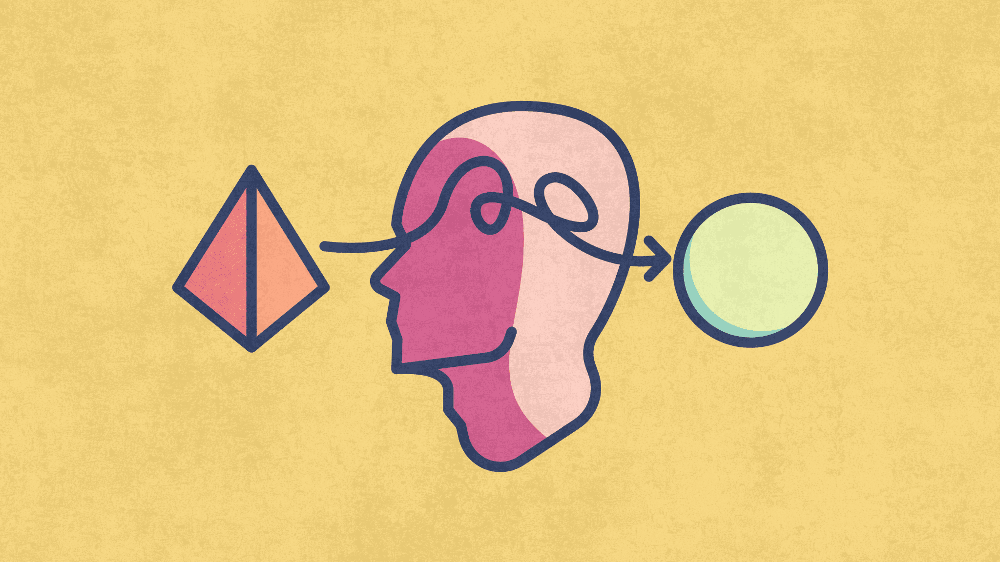
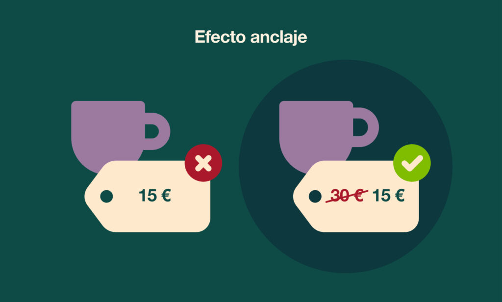
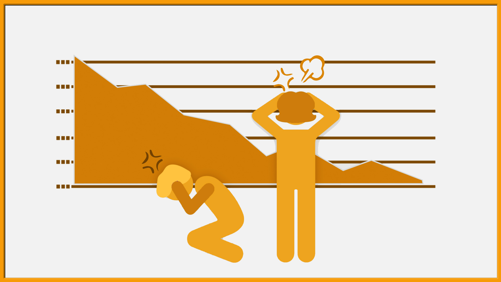
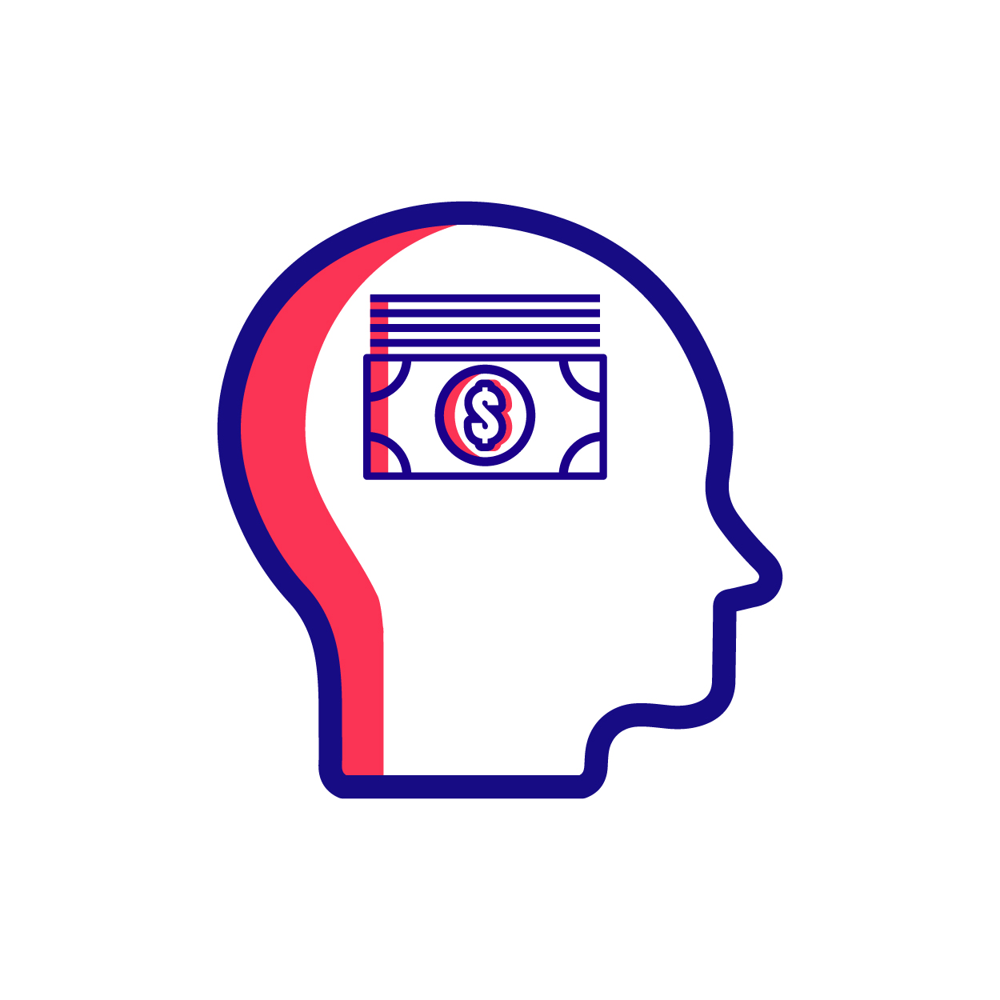
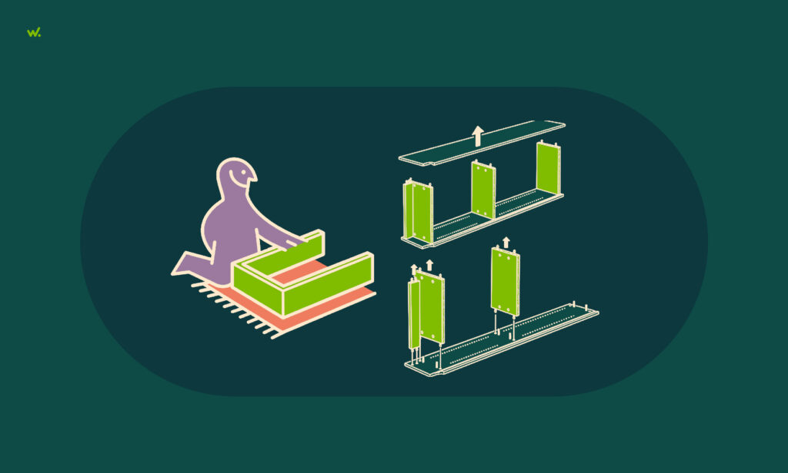

Psicología del Gasto y Sesgos Cognitivos en el Consumo
Cómo Tu Mente Influye en tus Finanzas Personales
Introducción
La manera que tenemos de gastar no depende solamente de cuánto ganamos, ni tampoco del coste de los productos sino que nuestras emociones, nuestras creencias, nuestros atajos mentales (sesgos cognitivos) juegan un papel importante en los vericuetos financieros que transitamos a diario. La economía tradicional tiene una posición que parte de que las personas actúan con racionalidad… pero la vida es una evidencia de lo contrario; en realidad, nuestras decisiones de consumo están profundamente mediadas por mecanismos psicológicos que nos hacen gastar más de lo previsto, o incluso malinterpretar la realidad de la utilidad de nuestros gastos.
¿Que son los sesgos cognitivos?
Los sesgos cognitivos son atajos mentales que simplifican el procesamiento de la información, aunque también pueden empeorar el juicio personal. A menudo, en el ámbito de las finanzas personales, tales sesgos afectan cómo valoramos el dinero, cómo tomamos decisiones de compra, cómo usamos el crédito o incluso si podemos llegar a ahorrar para el futuro.

Sesgos Principales que Afectan el Gasto
Sesgo de Anclaje
La tendencia natural de las personas para poder tomar decisiones se basa en la primera información que nos llega a la cabeza, ya sea un precio, una comparación que hacemos cuando iniciamos una búsqueda de compra... Con lo cual podemos tener un efecto que nos lleva a hinchar el valor de una oferta.

Aversión a la Pérdida
Preferimos evitar pérdidas antes que obtener ganancias equivalentes. En el consumo, esto puede hacernos gastar más para “no perder” beneficios percibidos (por ejemplo, ofertas por tiempo limitado).

Contabilidad Mental
La clasificación del dinero mentalmente en “cuentas” (ahorro, ocio o gastos cotidianos y corrientes), puede llevarnos a una conducta predispuesta a gastar asociados a los códigos de esas cuentas o categorías.

Control Ilusorio
Nos convencemos de tener mayor control sobre el resultado de nuestro gasto o de nuestras inversión de lo que verdaderamente tenemos — lo que puede llevarnos a tomar decisiones impulsivas o arriesgadas
Efecto IKEA
Valoramos más los bienes en los que hemos puesto esfuerzo. Esto puede llevarnos a pagar más por productos que simplemente “construimos” o personalizamos.
